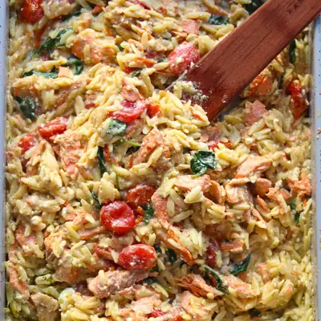

Pesto Salmon Orzo Bake

Ingredients
- 1 1/2 cups orzo pasta (260g)
- 3 cups low sodium chicken broth
- 1/2 teaspoon salt
- 1/4 teaspoon freshly ground black pepper
- 1/2 cup pesto (homemade or store-bought)
- 1 cup Greek yogurt (or cream cheese)
- 1 pound salmon
- 2 cups cherry tomatoes
- 2 large handfuls of baby spinach
Steps
- Preheat the oven to 400°F. Lightly coat a 9×13-inch deep baking dish with cooking spray.
- Add the uncooked orzo, chicken stock, pesto, Greek yogurt, salt, and pepper. Stir until everything is well combined. Make sure all of the orzo is submerged in the liquid so it cooks evenly.
- Arrange the salmon on top of the orzo and scatter the cherry tomatoes around it. Don't stir once you've added the salmon and tomatoes.
- Cover the baking dish tightly and bake for 25 minutes. Keeping the dish covered is important because it traps steam, which helps cook the orzo while keeping the salmon moist.
- Remove the dish from the oven and uncover. Stir in the baby spinach, gently breaking the salmon into large chunks as you combine everything.
- Return the dish to the oven uncovered for another 5–10 minutes, or until the orzo is tender and most of the liquid has been absorbed. Give everything another good stir before serving. Add an extra spoonful of pesto or a squeeze of fresh lemon, if desired.
Recipe by Min Kwon · Kidfriendly Meals, from MJ and Hungryman. Saved here for personal use; the original has the full notes, tips and photos. Open original